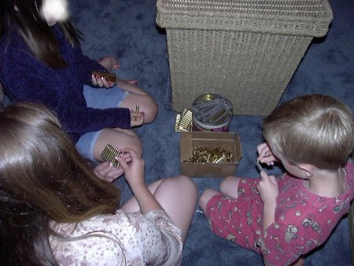

WolfesBlogArchives: November 2005
Wednesday, November 30, 2005
THREE PIECES TO THINK ABOUT TODAY.
William Rivers Pitt on the Aegis videos and other apparent horrors of Iraq. NPR also did a moving and revealing story the other day about the honorable, tragic man Pitt mentions, Col. Ted Westhusing. The world lost a rare man when military ethicist Westhusing decided he could no longer be "sullied" by cruelty and corruption.
[more]Posted by Claire @ 10:15 AM CST [Link]
Tuesday, November 29, 2005
YESTERDAY I BLOGGED ABOUT MIAMI COPS planning random shows of force in public places, including ID checks of everyone entering certain banks, hotels, and other "public places." Now here's almost the same article, almost the same wording, but with an explicit statement saying there will be NO random ID checks.
Guess that one went down the memory hole.
(Elk found this one.)
Posted by Claire @ 07:36 PM CST [Link]
LOOKS LIKE THE SERENITY DVD is going to have lots of bonus features, including deleted scenes.
(As so often happens, NuclearDruid spotted it first.)
Posted by Claire @ 01:30 PM CST [Link]
IT'S THE FEDS, STUPID!
Local schools tag kids with electronic surveillance devices. But who's really behind it?
Maryland is building a system to track motorists by their cellphones. Other states are following suit. But who's behind it?
IT'S THE FEDS, STUPID! (Word doc)
Records of your net surfing, including supposedly anonymous political activities, may soon be available to third-world dictators and similar scum. And -- naturally -- who's behind it?
And no, you really weren't too stupid to get it right from word one, were you? Ah, your Homeland (Achtung!) Security dollars (and highway funds) at work.
Posted by Claire @ 11:52 AM CST [Link]
AT FIRST I WASN'T GOING TO BLOG THIS because it was already making its way so quickly around the blogosphere and the listservs. But really ...
Miami police announced Monday they will stage random shows of force at hotels, banks and other public places to keep terrorists guessing and remind people to be vigilant.Deputy Police Chief Frank Fernandez said officers might, for example, surround a bank building, check the IDs of everyone going in and out and hand out leaflets about terror threats.
Who the hell are the "terrorists" here? And who is being terrorized other than ordinary American citizens? I doubt that even the &^%$#@ing Nazis made it a routine matter to surround banks, hotels and "other public places" to demand ID of every person entering. But for sure the Nazis were obsessed to an absurd degreee with ID and ID cards -- as though they were magical devices that could enable them automatically to tell "good" people from bad ones. And certainly they did maintain control by constantly reminding the populace that they were under vague and deadly threats, both from within and from without.
Posted by Claire @ 08:32 AM CST [Link]
Monday, November 28, 2005
PROFESSOR R.J. RUMMEL, HE WHO COINED THE WORD "DEMOCIDE" to describe the mass murder of citizens by their own governments, has often been quoted as saying that an astonishing number of people were thus slaughtered by governments in the 20th century.
In Innocents Betrayed we used an approximation of his figures: 170,000,000. His web site says approximately 169,200,000. He has also been quoted as saying 174,000,000 innocents were slaughtered by states -- and that's not counting soldiers killed in combat. To most people, the figures seem too extreme to believe.
Sure enough, Prof. Rummel has just sent out an e-mail announcing that he must now revise his totals.
Upward.
His e-mailed explanation follows (courtesy of Katherine Albrecht of CASPIAN): [more]
Posted by Claire @ 07:25 PM CST [Link]
HOW COULD I HAVE MISSED THIS? Social security card burnings in New Hampshire! Good on you guys.
What kind of country feeds its young to the government at birth?
Posted by Claire @ 03:49 PM CST [Link]
Sunday, November 27, 2005
MATT DRUDGE REPORTS
ABC alone has at least two would-be shows set in post-apocalyptic America ("Resistance" and "Red & Blue") while Gavin Polone and Bruce Wagner are teaming for the comfy-sounding plague drama "Four Horsemen" at CBS (which also is developing "Jericho," about life in a small town after America is destroyed).Says Fox exec VP Craig Erwich: "The creative community appears to be really inspired this year," he says. "It was an exciting time to be buying. I came away pretty encouraged about network TV."
Sorry for not supplying a link, but Drudge links are transient and I can never figure out how to get permanent ones. The original report is supposedly from Variety. Anyway, point is ... sure, they're just TV shows. And "would-be" TV shows at that. The fact that several end-of-America series are in the works might mean nothing more than a run of medical shows, crime shows, or reality shows.
But given the state of the economy, the overreach of government, the total corruption of politics and the growing corrruption of culture, perhaps these writers and programming execs have tuned into something that's in the tom toms.
(Thanks to SJ.)
Posted by Claire @ 11:10 PM CST [Link]
Friday, November 25, 2005
DO YOU REMEMBER THE GUILDFORD FOUR? They were the alleged IRA bombers who spent almost 16 years in prison based on the sloppiest (and crookedest) sort of evidence. One damning "fact" presented against them was that they had "traces of nitroglycerine" on their hands -- proof positive that they'd been handling explosives.
Only thing is, you can get nitroglycerine-like "traces" on your hands from all kinds of things -- including playing cards they may have been handling.
Well, here comes some related news on the shakiness of "expert" testimony in U.S. courts. [more]
Posted by Claire @ 12:59 PM CST [Link]
REBELFIRE'S POOR, BELEAGUERED JEREMY would recognize the TiVo of the future:
[more]Posted by Claire @ 12:23 PM CST [Link]
Thursday, November 24, 2005
HAVE A HAPPY AND BLESSED THANKSGIVING.
For days I've been planning a long blog entry for today, listing the many, many things I'm grateful for -- beginning with my friends, the TCF community and readers of this blog and extending outward to the awesome vault of stars newly revealed this week by the logging of the land next door to Cabin Sweet Cabin. I was going to celebrate the love of dogs, the generosity of ... oh, a dozen or more great hearts, the glory of the sunrise that blazed over the treetops this morning, the peace of my hilltop, Debra's wicked humor ...
But it's too overwhelming. Even in a country rapidly descending into police-state hell, there is still more to be thankful for than to dread. In my small, sometimes worry-filled, sometimes depressed life, there's more beauty and joy than I can quite cope with today. So no long bloglist. I just hope that your day is as happy and peaceful as mine.
Oh yeah, and since this is the grand kickoff of Food Season, don't forget my recipe for Decadent Potato Casserole. :-)
Posted by Claire @ 10:07 AM CST [Link]
Wednesday, November 23, 2005
YEAH, WHAT DEBRA SAID. About Reefer Madness: The Movie Musical, I mean. I got my copy today from the Pre-Christmas Fairy.
It was a howling hoot of sendup of the entire war on pot, mostly the propaganda of the 1930s (with some 1950s sneaked in, and with alas all too much relevance today). It was a top-notch production in every way -- song, dance, acting, sets, costumes, editing, writing, directing. It was, of course, funny as hell. And the more you know about the history of the drug war or the actual effects of cannabis, the more funny you're likely to find it.
[more]Posted by Claire @ 09:25 PM CST [Link]
MEET DEB DAVIS: This year's Dudley Hiibel. Good luck to her -- and to us all.
Posted by Claire @ 10:20 AM CST [Link]
IT'S FUNNY -- IN BOTH THE "FUNNY STRANGE" AND "FUNNY HA HA" SENSES -- that the new variant on the Sober worm is traveling so rapidly by pretending to come from the FBI, the CIA, or the German national police.
The text tells the recipient they've been caught visiting 30 "illegal web sites" and demands that they open an attachment supposedly containing questions from "the authorities."
I suspect there was a time when the average American (if not the average German) would have intuitively known that he wasn't under investigation by the feds. After all, the feds were only interested in investigating criminals and spies (and okay, a few prominent celebrities, a few prominent radicals ...). Right?
Now, under the Bushevik regime, even Joe and Jo Average readily believe, even if they don't think about it much, that Big Brother can watch everything and that everyone is a suspect. And who knows, maybe millions really do feel guilty about the websites they or someone in their family might have been visiting.
Posted by Claire @ 10:00 AM CST [Link]
LOL! TEXAS IS SUING SONY over spyware. The state attorney general is seeking $100,000 for each computer infected.
It's almost enough to make a body feel sorry for poor, abused Sony.
Posted by Claire @ 12:08 AM CST [Link]
Tuesday, November 22, 2005
I JUST SAW SOMETHING YOU NEVER SEE IN AN AMERICAN MOVIE. I saw characters buying, selling, and using recreational drugs who were not gangbangers, hookers, drug-addled street-people, or the maladjusted children of respectable rich people.
I saw characters using -- and dealing -- drugs who were depicted as perfectly nice, normal, decent, fun, thoughtful, successful human beings. [more]
Posted by Claire @ 11:24 PM CST [Link]
CRAZY? A WAR CRIMINAL? A SPOILED BRAT? ALL OF THE ABOVE? We now learn that Bush wanted to bomb al-Jazeera headquarters in the nation of Qatar.
Once again, an explosive memo leaks out of Britain. Tiny Blur, who otherwise seems willing to be Bush's sock puppet, apparently talked El Supremissimo out of bombing a U.S. ally, slaughtering journalists and technicians, and evoking even greater disgust from the civilized world.
Posted by Claire @ 07:10 PM CST [Link]
LAST WEEK AN ACQUAINTANCE STARTED CHEMOTHERAPY. Horrible, horrible thing. A month ago, this lively lady -- a veritable saint of animal rescue work, a real heroine -- seemed well. Now, she can barely lift her head from the pillow -- except to vomit repeatedly.
Thanks to greatheartedness of one of my friends -- who doesn't know this woman at all -- she received a gift of herbal anti-nausea medication. Neither the woman nor her husband have any experience with this medication, nor have they closely followed the legal wranglings over its status. [more]
Posted by Claire @ 09:46 AM CST [Link]
Monday, November 21, 2005
THE CHAINSAWS ARE SNARLING. My next-door forest is coming down. All morning I've heard the growls of the saws, the tap-tap-tapping of wedges being driven, and the crashes of falling trees. The crack-boom of trees coming down always surprise me by being much softer than you'd think. [more]
Posted by Claire @ 02:31 PM CST [Link]
CHENEY PROVIDED DIRECT "GUIDANCE" FOR TORTURE says a retired aide to Colin Powell. What sickening sorrow, to be ruled by such moral pygmies.
Posted by Claire @ 08:10 AM CST [Link]
Sunday, November 20, 2005
ON THE EASTERN BOUNDARY AT CABIN SWEET CABIN a mature forest makes a serene, privacy-respecting neighbor. Beautiful one, too. On summer nights owls call and coyotes prowl. I can not only look up into the majestic trees, but can walk to my fence line and gaze down into a dark, cool intimate glen, covered with enormous trunks and greenery.
This forest isn't exactly old growth. Nothing around here is. But the family who owns it never cuts until both the trees and the prices at the mill scales are right. These trees have been left to grow bigger and older than most in the area, by far. I've always known someday I would lose this wonderful neighbor.
This week, the owners began logging a portion of their forest a quarter of a mile from here. For a while, I thought the patch next to Cabin Sweet Cabin would be spared the chainsaw. But this afternoon, a grader came. I heard it, just out of my sight, opening up a disused logging road not 100 yards away. They might merely be doing road maintenance, since they have equipment out here already. Or it might be bye-bye forest. I'll know in a day or two. [more]
Posted by Claire @ 06:12 PM CST [Link]
TIM OSMAN SENT ME SOME LINKS TO NEW "V FOR VENDETTA" POSTERS. But before I got a chance to grab and blog them, Wally Conger did my work for me. Wally also expresses my sentiments: If the movie is anywhere near as cool as its posters, it's going to be a winner. I'm still grumbling that "remember, remember the fourth of November" (the original tag line and originally planned opening date) got blown off. The new spring opening date seems far, far away.
Posted by Claire @ 01:50 PM CST [Link]
IN A CLASSIC EXAMPLE OF NEWS-RELEASE "JOURNALISM," Reuters reports that airline passengers may soon be subjected to voice-stress lie-detector tests. And get this. After noting that some 12 percent will show signs of nervousness (e.g. guilt, according to the promoters), the article jumps to this conclusion:
"Some may feel nervous because they have used drugs, while having no intention to smuggle drugs," he said. "The whole thing is performed in a low-key manner to avoid causing anxiety."Uh huh. Noboby but criminals will feel nervous or stressed about one more freedom-threatening mind invasion. And being forced to don headphones and answer questions about whether you plan acts of terror or are smuggling drugs is "low key."
Let's not forget that the worst sociopaths can often breeze through "lie detectors" without a hint of nervousness. And let's also not forget that people with highly scrupulous consciences, or people who don't see the world in terms of yes/no, black/white may show stress even at the simplest questions. Not to mention all those millions who will show stress just because being distrusted, grilled, and generally abused in the name of security is -- despite the fantasy claims of marketers and cops -- effing stressful.
No wonder so many airlines are going bankrupt. They welcomed and continue to tolerate increasing abuse of their customers. Now, if only governments that adopt idiotic "security" technologies would follow the airlines into bankruptcy.
(Thank you to SL, CASPIAN, and others.)
Posted by Claire @ 12:13 PM CST [Link]
Saturday, November 19, 2005
THE VICES OF A DECLINING EMPIRE
of which he had long been a victim; the cruel absurdity of the princes, unable to protect their subjects against the public enemy, unwilling to trust them with arms for their own defense, the intolerable weight of taxes, rendered still more oppressive by the intricate or arbitrary modes of collection, the obscurity of numerous and contradictory laws, the tedious and expensive forms of judicial proceedings, the partial administration of justice, and the universal corruption which increased the influence of the rich and aggravated the misfortunes of the poor.
I’ve been traveling a lot lately, spending far too many hours waiting in the temporary gulags of the modern American airport. I can never get any serious work down in “lounges” crammed with screaming kids, people shouting into cell phones, and the incessant “security” announcements blasted from dozens of hidden loudspeakers. But I always get to the place an hour or two early, lest my demeanor or mere chance find me selected for special attention by the Gestapo, and cause me to miss my flight.
I can’t work, but I can read, and lately I’ve been studying Gibbon’s The Decline and Fall of the Roman Empire. I’m only halfway though the nearly 1,500 pages of the abridged edition. Silly as it may seem, many people are impressed, or at least curious, at the sight of a man studying a thick volume, and I’ve had many discussions with my fellow detainees about the book, which everyone seems to know about, but very few have read.
Reading Gibbon’s masterpiece feels like being hit in the face with a 2x4 over and over again. The parallels of the decaying Roman empire with those of modern America are frequent, obvious, and always dismaying. It is simply astonishing that a work written in the 1770’s about events that occurred nearly 2,000 years ago should so frequently, and devastatingly, describe our plight. The passage I quoted above is not the best, it is simply the last one I read. It is rare to read as much as 10 pages without encountering something equally sobering.
What I find remarkable is not the painful parallels, which many learned and eloquent writers have been pointing out for decades. My airport discussions have invariably turned to the subject of the declining American empire. When I mention the striking similarity of decaying Roman society to our own, the response is always
“Yes, but the fall of the Roman empire took four hundred years.”
This is perfectly true, although Greece and Rome itself were invaded and sacked long before the final collapse of the empire of the west. (The eastern empire, governed from Constantinople, persisted a full thousand years longer, but I have not yet read that part of the story.) I am struck that no one disagrees with the statement that we live in the ebb times of a once mighty nation. No one argues that our best days lie ahead of us. No one protests that we will overcome our numerous problems and achieve even greater wealth, freedom, and prosperity in the times to come.
A survey conducted in the gloomy environment of government-controlled waiting rooms may not accurately reflect the sentiments of the entire nation, but the calm acceptance of our society’s decline is troubling, if understandable. The implicit wish contained in the reminder that Roman society took four centuries to collapse is that our own destiny lies far enough in the future that none of us will live to see it.
I’m not so sure. Things happen a lot faster these days, and by some reckonings America has been going downhill for a hundred years or so. History does not repeat itself, but it rhymes, and I’m not looking forward to verses that will be written by millions of people who calmly accept the decline of a nation that was once prosperous, proud, and free.
Silver
Posted by Silver @ 06:56 AM CST [Link]
Thursday, November 17, 2005
THOSE CLEVER BRITS have finally figured out the solution to their soaring "gun-violence" problem, reports atek3: regulate or ban reloading equipment. (Nevermind that the banners or the reporters don't appear to have Clue One about the distinction between a cartridge and a bullet.)
Posted by Claire @ 09:16 AM CST [Link]
MY YULE GIFT TO MYSELF this year is going to be Silence. Sometime around December 21, I'm getting rid of both my Internet connection and my land-line telephone.
This feels risky, scary -- and absolutely delicious.
I'm considering it a one-year experiment. No Internet? OMG! How can I earn a living, how can I maintain my friendships without being "connected"?
But on another level, it's simply a step down a path I've been on since I was a teenager and I hope I have the guts to take it beyond one unconnected year. [more]
Posted by Claire @ 09:05 AM CST [Link]
Wednesday, November 16, 2005
A QUICK RECAP OF TODAY'S NEWS before I shut the computer down for the evening and enjoy some peace.
1. There's a new blog in town. Police State USA is the project of Michael Paladin. I'll be adding it to the blogroll.
2. Now that the fedgov has admitted (with a slew of ifs ands and buts) that yes, it did use white phosphorus as a weapon in urban combat in Iraq, the United States once again faces a "Propaganda Nightmare of Chemical Hypocrisy." The inmates of that insane asylum on the Potomac are going to bring down the wrath of the entire world upon us.
3. Speaking of which, we hear so much about "detainees." But we never hear numbers. I'll bet a lot of us think they're talking a few thousand, at most. Alas, no. From Dana and Breitbart come some depressing statistics. [more]
Posted by Claire @ 08:48 PM CST [Link]
IT'S A GOOD THING THE UNITED STATES is too big for a system like this. But I wouldn't want to live in or near certain cities if this totalitarian wet-dream crosses over the water from Britain.
You know, if you ever have one of those days when you despair at how spineless most of your fellow countrymen are -- you can always gaze over at the utterly supine, compliant Brits and feel a little better about the people around you.
Unless the people around you are British, that is. Then, you're screwed, pal.
Posted by Claire @ 04:24 PM CST [Link]
Tuesday, November 15, 2005
YIKES! The news just gets worse and worse for anyone who plays Sony CDs on a Windows computer. Not just rootkits now. But spyware and adware installed without consent. Must-read info if you're an XP owner who's ever played a Sony CD.
The arrogance and dishonesty of these people make music pirates look like the good guys.
Posted by Claire @ 08:52 AM CST [Link]
SHEDDING SOME (FLASH)LIGHT ON THE SUBJECT. The new Hardyville column is now online. This one is more informational than fanciful -- about my favorite and most useful flashlights.
Also, you might like to know that Hardyville Santa is making his list in preparation for the December 1 column. He's getting much advice from TCF members -- and perhaps also from you?
Posted by Claire @ 08:42 AM CST [Link]
UNINTERRUPTED TIME TO THINK, REFLECT, AND CREATE is not a luxury -- though we have allowed it to become one. In setting up contitions of ceaseless, artificial hustle-bustle, do-it-now, interrupt this to do that, we've removed something crucial from being human. We've eliminated the pure, clear time needed to synthesize information and experience. To put together the pieces and make sense of life.
Without that, it's all just random motion.
Why have we allowed one of life's greatest necessities to become a privilege that almost none of us can afford? It's absurd. It's destructive. And it saps life not only of meaning but of pleasure.
Posted by Claire @ 06:03 AM CST [Link]
Monday, November 14, 2005
LOL! Brad at McBlog points out that Sony's alleged anti-piracy rootkits were themselves full of pirated software!
Security maven Bruce Schneier says Sony is in big legal trouble.
Not that I believe cops or government courts should get involved in intellectual property issues, but it's a marvelous irony to see the rabid, arrogant over-reaching corporate bullies get their comeuppance from the little people they've been abusing and intimidating all this time.
As I've said before I do believe in the concept of intellectual property. Those who create valued works have a right not to be treated as milk cows for those who don't. It's Marxist to believe that others should slave so you can have freebies. But I 100 percent do NOT believe in the high-handed, government-like tactics being used by the likes of the RIAA, the MPAA, and now Sony.
Their tactics are not only nasty, but stupid and reality-defying. You can't stop the effects of the digital revolution with laws and lawsuits and you'd sure better not hack people's computers in the name of "anti-piracy."
And -- even more mind-boggling irony -- what Sony genius got the idea that the best way to combat piracy was to attack and alienate the paying customers?
The mega-corps and their hired industry-association thugs deserve everything they're going to get from angry movie and music lovers.
Posted by Claire @ 08:02 AM CST [Link]
HOW AMERICANS BECAME TORTURERS. By borrowing techniques from the Red Army that were never designed to elicit any "truth," but merely to terrorize.
Posted by Claire @ 07:52 AM CST [Link]
Sunday, November 13, 2005
I'VE JUST ADDED THE FOLLOWING BOOKS AND DVDS to the Wolfesblog bookstore. All are from Amazon.com unless otherwise noted.
Doing your holiday gift buying through Wolfesblog's Amazon.com links helps keep the blog going -- and gets some fine, subversive merchandise into the hands of your friends and family. BTW, the response to our holiday autographed book sale has been great. :-) Thank you all -- and enjoy! [more]
Posted by Claire @ 02:04 PM CST [Link]
Saturday, November 12, 2005
UNTIL LAST NIGHT, the only time I've ever watched a DVD and then immediately insisted on watching ALL of the bonus features was when I watched Firefly. It was just that good -- I didn't want it to end. As Claire blogged, I tried to get her to watch it, and after endless excuses about why she hadn't yet done so, I finally sent her my own copy of the DVDs. I never got them back (although she did send me a replacement set via Amazon).
But last night, not only did I watch a movie and then immediately watch the bonus features, I actually rewatched the entire movie with the commentary turned on. It was just that good. The movie is Showtime's newly-released Reefer Madness: The Musical, and it has it all: the over-the-top slapstick and clever dialog of Dodgeball, the insider gags of Galaxy Quest, the psuedo-seriousness of The Brady Bunch Movie, and the razor-sharp political commentary of Canadian Bacon. [more]
Posted by Debra @ 05:12 PM CST [Link]
HM. LOOKS AS IF SOME BRITS MIGHT BE GETTING FED UP with all that nannying.
(Another courtesy of S.J.)
Posted by Claire @ 01:30 PM CST [Link]
WEEKEND READ. I roll my eyes at conspiracy theories and have never paid heed to claims that the World Trade towers collapsed in controled demolitions. But ... well, read for yourself and see what you think.
And as you peruse that news, consider: the extreme cynicism of the Bush administration and what it might or might not be willing to do for popularity: "GOP memo touts new terror attack as way to reverse party's decline."
(Thank you to SJ and SL for -- yes, guys -- more cheery news. BTW, should the link to the WTC article ever disappear, here's the scientific paper on which the story is based.)
Posted by Claire @ 01:28 PM CST [Link]
Friday, November 11, 2005
AH. YOU SEE, MERE NATIONAL ID IS JUST NOT ENOUGH, says that great defender of freedom, IBM.
And can't you just hear the ring of money, money, money behind the call for "global ID management"?
(Thank you to SL for the cheery news.)
Posted by Claire @ 09:19 AM CST [Link]
BUT THERE'S GOOD NEWS, TOO, as as John Lott writes about the San Francisco handgun ban.
(Another tks to SJ.)
Posted by Claire @ 08:56 AM CST [Link]
"THEIR TERRORISM AND OURS." Justin Raimondo rips into the terror bombers and speaders of mass destruction.
Posted by Claire @ 08:54 AM CST [Link]
THE GREEN RETRIEVER IS BORN. :-) :-)
(Tks, SJ)
Posted by Claire @ 08:51 AM CST [Link]
Thursday, November 10, 2005
"ON THE EFFECTIVENESS OF ALUMINUM FOIL HELMETS" -- an empirical study from MIT.
Alas, I must warn faithful blog readers: The scientific news on tinfoil hats is not good for those of the paranoid persuasion.
(:-) Found by Dana of CASPIAN)
Posted by Claire @ 02:33 PM CST [Link]
IT'S TRUE. THERE ARE CHEMICAL WEAPONS IN IRAQ. The U.S. Army confirms it. And so do the Marines, who are having their big birthday today (though historically the birthday has been flexible).
Where, or where, oh where, are the international war-crimes tribunals when you need them?
Posted by Claire @ 09:09 AM CST [Link]
IT'S TOO BAD THAT SIMPLE COMMON SENSE and responsibility have to be mandated by constitutional amendment. Under the present dire circumstances, however, the amendment is a great idea.
I've observed before that if a burger-flipper at McDonalds did his job with the level of malfeasance shown by congressthings who don't read bills, he'd be fired in five seconds flat.
My own favored amendment has three provisions: congressthings have to swear under oath that they've actually read the final version of every bill they vote on; no bill may contain any provisions not described within the bill's title; and the language and intent of every bill must be clearly understandable to a person with typical 12th-grade reading abilities. (There are standard tests, used by ad agencies and manual writers, to determine readability levels of texts. OTHO, you could also say "understandable by average citizens 16 years or older.")
But when it comes down to it, once government has become such a mockery that "representatives" don't even bother to read the laws they're passing, you're beyond any help that a mere constitutional amendment can offer.
Posted by Claire @ 09:00 AM CST [Link]
Wednesday, November 9, 2005
I JUST REALIZED IT WAS KIRSTEN who turned me on (pardon the 60s pun) to the book Mom's Marijuana. Here's her most excellent take on it. I knew I'd gotten the recommendation from somebody, but at the time I wrote my blog entry, I didn't recall whom.
Sorry, Kirsten. I love your Crackers Central/Enjoy Every Sandwich blog and I admit I'm especially partial to the entries written by the brilliant canine, Pepper Ann Delbarco.
Posted by Claire @ 08:53 AM CST [Link]
"THE WISDOM TO KNOW THE DIFFERENCE. Once more, a big amen to James Leroy Wilson's new, more reflective turn of blogging.
I haven't quite reached his state of eqanimity. I would still like to be able to heal the riots in France. I still want somehow to ensure that the to ensure the the Pentagon really means it when they instruct their interrogators not to use torture. If I could, I would stop the war in Iraq and smash the CIA's new gulag-in-the-making. I'd undo the San Francisco handgun ban.
[more]
Posted by Claire @ 08:13 AM CST [Link]
Tuesday, November 8, 2005
WHY -- TO A GOVERNMENT -- IS THE LEAK ALWAYS WORSE than the outrage that prompted the leak? It's okay to have secret prisons, unbound by any rules against torture -- but talking about those prisons is forbidden?
Posted by Claire @ 11:15 PM CST [Link]
ARE THERE CHEMICAL WEAPONS IN IRAQ, after all?
Posted by Claire @ 02:37 PM CST [Link]
HOW THE MPAA KILLED THE MOVIE THEATER EXPERIENCE: A report from an angry man who attended a police-state media screening. More evidence, if any is needed, that mega-corps (as exemplefied in this case by their trade association) all want to be governments when they grow up.
Posted by Claire @ 01:47 PM CST [Link]
Monday, November 7, 2005
THIS IS INCREDIBLE. Not at all surprising, but still incredible. Here's how the War on Terrorists crowd are using their national security letters. You know, the constitutionally flaky paperwork that lets them give themselves permission to investigate "terrorists"?
To create a 100-page dossier on a journalist who's been critical of George Bush.
Makes Richard M. Nixon with his pathetic little enemies lists or J. Edgar Hoover with his titillating files of celebrity sexual kinks look like a pair of bargain-basement paranoids.
Posted by Claire @ 08:37 PM CST [Link]
A RARE ITEM THAT BOTH POLICE AND THEIR CRITICS SHOULD WELCOME: The Taser cam.
SCOTTSDALE, Ariz. - Public outrage was immediate after police in Miami used a Taser to shock a 6-year-old last year in an elementary school office.Police said the Taser was used because the boy, a special needs student, had cut himself twice with a shard of glass and threatened to slash himself again or any approaching officer.
"When you first hear the story, you think, `Oh my gosh, cops Tased a 6-year-old,'" said Miami-Dade police spokeswoman Nelda Fonticella. "But you've got to take a look at the entire situation to realize why it was done."
I'm sure the cam will be helpful (and soon critical) device. But I still think there's something wrong with an adult who has to resort to electric shocks to deal with the behavior of a child.
(Above item found by Katherine of CASPIAN, who is proving pretty hard for authoritarians to handle, herself. Her book Spychips, co-authored with Liz McIntire, has not only prompted an RFID industry spokesperson to issue a rebuttal, but to attempt to co-opt her by inviting her and Liz to be on the advisory board of RFID, Inc. And here's what's funny. Privacy maven Richard. M. Smith checked out the online version of the article announcing the rebuttal document. The article contains a web bug -- a tracking device.)
Posted by Claire @ 11:44 AM CST [Link]
THE ALTERNET DRUG REPORTER has a wonderful long article about the people cultivating medical cannabis in northern California. At the same time, Garrison Keillor bemoans the foul tragedy of cannabis prohibition and imperilled pot activist Marc Emery contemplates life in prison as a "drug kingpin."
Over the weekend I read a moving book called Mom's Marijuana by psychologist and NPR commentator Daniel Shapiro. [more]
Posted by Claire @ 09:23 AM CST [Link]
A-FRICKIN-MEN! Habitually, they vote for laws they later pretend to hate.
This disconnect between actions and words isn't only the disease of the left. For years now, ex-rep (and conservative) Bob Barr has been going around positioning himself as a "privacy advocate." If you merely read his writings, you might be impressed. But go back and look at his votes ca. 1996, when the current ramped-up rape of privacy and individual self-ownership really took off, and you'll find "Republican Revolutionary" Barr firmly on the side of national-ID drivers licenses and a host of other statist abominations.
May their afterlife consist of being forced to live in a society where every, single law they ever voted for is applied to them. Let them decide whether they've created heaven or hell.
Posted by Claire @ 09:07 AM CST [Link]
Saturday, November 5, 2005

WHO SAYS LIBERTARIANS DON'T BELIEVE IN TRADITIONAL FAMILY VALUES?
Posted by Claire @ 10:26 AM CST [Link]
EVEN IF THEY DON'T ACTUALLY CARE ABOUT HUMAN RIGHTS, shouldn't White House spin doctors be warning Bush and Cheney that being a pro-torture lobbyist somehow just doesn't improve one's all-important public image?
Especially when news like this keeps coming out. Turns out some of those "terrorists" you've "detained" in hellish conditions year after year, Mr. Torture-is-All-American, are a terror only to those who can't take a joke.
Posted by Claire @ 10:18 AM CST [Link]
Friday, November 4, 2005
THE PEOPLE WHO LOVE TORTURE always use this argument. It seems to be the only one they have. "What if you captured some big Al-Quaeda operative and you knew he held the secret to a weapon of mass destruction that you knew was going to go off any minute if you just didn't do something to stop it and ..."
Oh &^%$#ing baloney. An interrogator who was actually in a situation like that would probably use every possible method to get the information and damn the personal consequences to himself. He'd break any law and history could judge him hero or villain.
But using that almost absurdly theoretical argument to justify national policies of isolating and tormenting hundreds, maybe thousands, of hapless men dragged in off the streets of Iraq or Afghanistan -- men who may be completely innocent of any crime -- is just unspeakable. Men like John Yoo, men like Alberto Gonzales, men like George W. Bush are just slapping the veneer of education on top of sub-medieval moral values. They deny that torture is torture ("Oh now; it's just a 'stress position' or 'discomfort.'"). They advocate cruelties to others that they themselves (war criminals, one and all) would be horrified to endure. (They'd scream for their rights -- and for a lawyer -- if anyone treated them as they so eagerly wish to treat others.) And then they close their eyes when their absurdly dramatic Hollywood scenario of interrogation leads to this. And this.
(The latter link may be the best report I've ever seen/heard NPR do. It's certainly one of the most savage and heartbreaking stories, focusing on one death, one man, one act of torture among many. Even if the prisoner was what his captors claimed, he deserved a fair trial, not a brutal death.)
I'm astonished that any sophisticated, civilized nation tolerates such a foul crew leaders and aparatchiks. Torture is not what Americans do. Torture is not what America does. Not as national policy. Not as wink-wink, nod-nod. Torturers are the enemy. Who on earth can't see that?
Posted by Claire @ 08:55 AM CST [Link]
OHHHHH. SO THAT EXPLAINS THE BIG BUSHEVIKI PUSH to prepare for the bird flu. Figures there had to be something like that.
Found via Bill St. Clair's blog. Today he also links to a piece on the first secession vote in the U.S. since 1861. Love those feisty Vermonters.
Posted by Claire @ 08:34 AM CST [Link]
Thursday, November 3, 2005
THIS IS HOW YOUR SHINY NEW REAL ID DRIVERS LICENSE will be used. Bet you just can't wait until this sort of thing comes to your state, right?
Every time life without a DL becomes so precarious that I consider giving in, I read something like this and I say, "Never again."
Just recently, the mail receiving service I've used for many years suddenly closed up shop. The former owner is still receiving the mail for a few more weeks "until customers can make other arrangements." But I find myself in the embarrassing position of being such a non-person that I literally don't qualify to have a mailing address! No post office nor private mailbox place will serve the government-IDless (and therefore obviously evil, terroristic, money-laundering, drug-dealing, etc.) likes of me.
One "legit" friend tried to offer service and got put through a bureaucratic wringer. I turned to another friend who made his best try -- and discovered that not only was he not able to help me get a truly private new mailing address; he himself would never again be "allowed" to rent a p.o. box or private mailbox! Of course I'll get another address. And he, too, will never let himself fall into the limbo our government and private masters are preparing for those who prefer privacy and self-ownership to state control. We'll eventually find friends, or subterfuges, that will get us our mail. And my friend, even with his own predicament, is still nobly seeking the best solution for me. But it's still a ridiculous situation.
Here's another one: [more]
Posted by Claire @ 05:37 PM CST [Link]
I'VE BEEN TESTING THE FREEDOM FLASHLIGHT. This is the hybrid lithium battery/shakable light that Debra and I have been offering at cost as a sneaky incentive to get you to buy more autographed books in our 2005 holiday sale.
JPFO -- which supplied the flashlights to us -- is also offering the Freedom Flashlight as their November special. And frankly, their deal is even better than ours. (Both of us are offering the flashlights at cost, but our cost is slightly higher than theirs. And they have a lower purchasing threshold. But we're the only ones offering autographs.)
Anyhow, the Freedom Flashlight is a cool tool and I plan to keep one in my truck and one around the house from here on. [more]
Posted by Claire @ 08:23 AM CST [Link]
FELLOW FILM FESTIVAL JUDGES Wally and Oliver spotted it before I did. But here's the news: Serenity is available for pre-order at Amazon.com. It ships December 20.
Posted by Claire @ 07:55 AM CST [Link]
Wednesday, November 2, 2005
DEAR FREE STATE PROJECT:
Yesterday you posted a statement on your site asking "people who thought [the original September 2006] goal was essential to their participation" to notify you of their intent. Here's my notification.
I signed an agreement to move to any state chosen by FSP members if a "critical mass" of 20,000 project participants has been reached 10 months from now.
If 20,000 other freedom activists have agreed to make the move to NH by then, I'll go. If not, then my obligation to the FSP ends.
[more]
Posted by Claire @ 07:40 AM CST [Link]
THOUSANDS OF DESPERATE FANS clamored to know what happened to Hardyville yesterday.
Oh, okay, one guy asked, "Why isn't your November first column online yet, Claire? Miss another deadline, did you?" But it sounds better the other way. Anyhow, Hardyville remained hidden in its Brigadoon-like mists because the judges -- Oliver Del Signore, Wally Conger, and I -- were still in the thick of an all-night, knock-down drag-out, teeth-bared, no fussy little Marquess of Queensbury rules fight over which films of yesterday and today should win the all-important Hardy Awards. But the battle is over now. The victors are ... er, victorious. And the slightly battered judges can now crawl home to tend their wounds.
You guys who voted for the Free People's Choice Hardy Awards had it a lot easier, trust me.
Posted by Claire @ 06:21 AM CST [Link]
Tuesday, November 1, 2005
PEOPLE GROAN ABOUT TAXACHUSETTS and the People's Republic of Kalifornia. But I'm beginning to think Ohio must be the most consistently awful place in the U.S. -- at least when it comes to Keystone Kop law enforcement. You might remember that cute little business when Ohio cops stole the identity of an innocent woman so they could give it to one of their pet snitches. Well, here they go again. Slightly different setup, but an innocent woman goes to jail AND gets publicly identified as a gang member.
And all this over a $50 sale of some harmless weed, yet.
Add this sort of nonsense to what was done to liberty's friend the Hunter (do a search on this site if you don't know what I'm talking about). And it kinda makes me think I'll avoid Ohio for the rest of my natural life.
(Thank you to EW for the latest news.)
Posted by Claire @ 02:08 PM CST [Link]
EVERYTHING THAT'S WRONG WITH THIS COUNTRY is summarized in today's NPR interview with John C. Bogle.
Bogle has written a book called The Battle for the Soul of Capitalism. I haven't read it yet. I'll get it from the library and report back to you. But in the interview Bogle's thesis was this: Money managers and other middlemen have taken over too large a segment of the economy, and the percentages of our investments that they're diverting to their own pockets and their own industry is sucking our economic life blood.
He might have a point or might not. Too little info in the interview to tell. He did toss out one rather astonishing figure.
But when the NPRette conducting the interview asked (and I paraphrase all of the following), "But you're a Republican. You're a capitalist. Surely you don't think the federal government should regulate the entire financial industry?" (because of course all NPRistas know that all Republicans want to strip the government down to nothing and all capitalists want totally free markets) Bogle responded:
"No, I don't at all think the government should regulate the industry. That's the wrong way to go. I just think Congress should pass a law ensuring that all financial managers are true trustees of our investments, and not individual entrepreneurs."
HUH?
The problems with such a plan are so -- pardon the expression, mindBogling -- that I first supposed Mr. B. must be some ivory-tower professorial sort, with no notion of such concepts as "unintended consequences" let alone "free markets." But turns out he's the founder of the famous Vanguard funds.
Isn't this just the way of life? "Oh, we don't want a centrally controled economy. Oh no. That would be bad. We just want this one little tweak that'll fix everything. And after that the state will simply wither away ..." Oh, wait, that "state will wither away" business was from those other guys -- the ones who hated capitalism and wanted to destroy it. Good old all-American Republican capitalists merely want to tweak the economy -- and our freedom -- to death -- but somehow "without federal regulation!"
Posted by Claire @ 12:15 PM CST [Link]
THE RESULTS ARE IN FOR THE TCF PRACTICAL POSTAL PISTOL MATCH! Debra here. Conclusion: don't mess with TCFers. Well, except me.